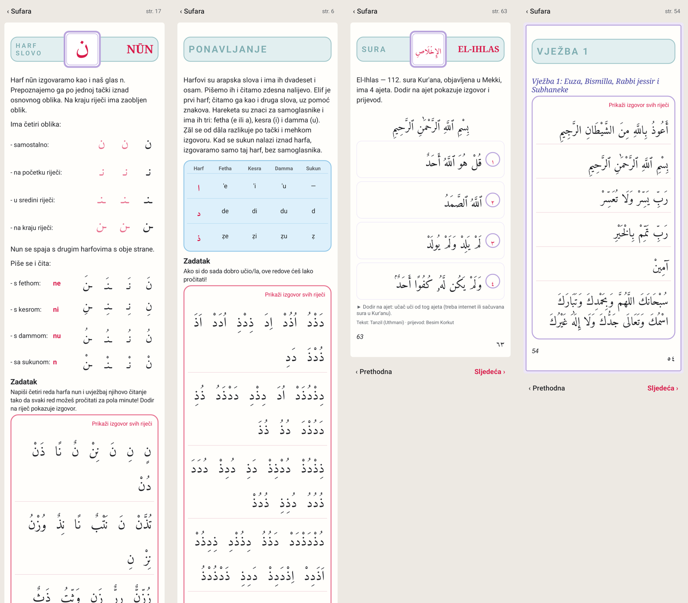
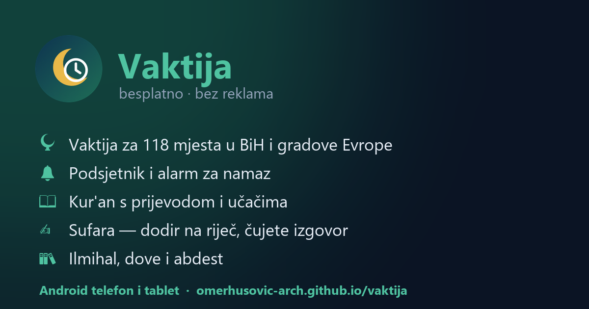
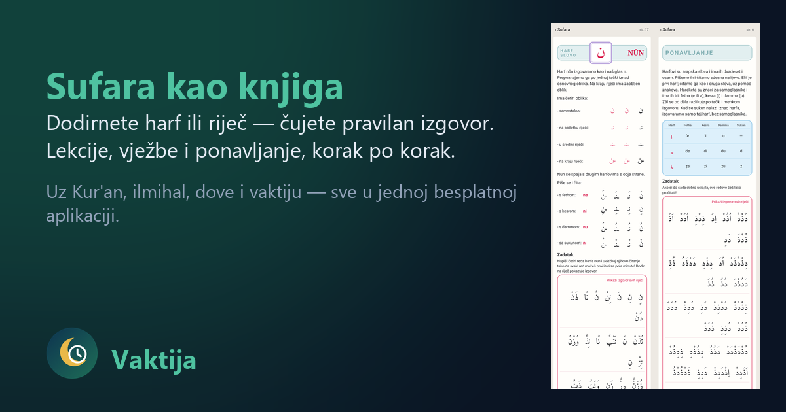

Šta nudi
🕌 VaktijaVremena namaza za 118 mjesta u BiH (automatski najbliže mjesto) i gradove u Evropi; hidžretski datum i vjerski praznici.
🔔 Podsjetnici i alarmPodsjetnik prije vakta, alarm za namaz i utišavanje telefona u vrijeme namaza — po želji.
🧭 KiblaSmjer Kible prema vašoj lokaciji.
📖 Kur'anArapski tekst, prijevod Besima Korkuta, transliteracija i učači — dodir na ajet pokreće učenje.
📚 Ilmihal i doveIlmihal, dove i abdest sa slikama, korak po korak.
ﺏ SufaraKao knjiga — dodirnete riječ i čujete izgovor; vježbe i ponavljanje.
📱 VidžetVaktija na početnom ekranu telefona, u više veličina.



Instalacija
- Na telefonu ili tabletu otvorite ovu stranicu i pritisnite „⬇ Preuzmi“.
- Otvorite preuzeti fajl Vaktija.apk i dozvolite instalaciju iz preglednika (samo prvi put).
- Pritisnite Instaliraj. Nova verzija se instalira preko stare — podaci ostaju.